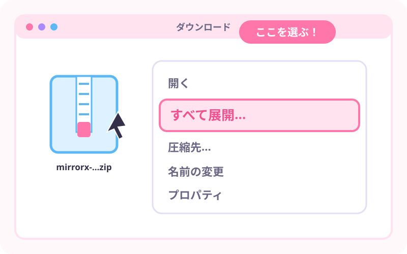
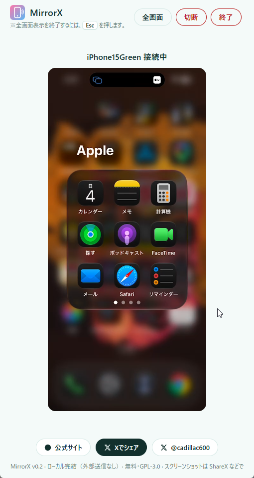
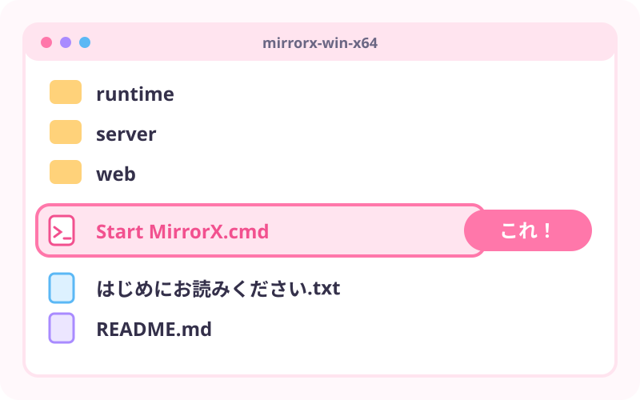
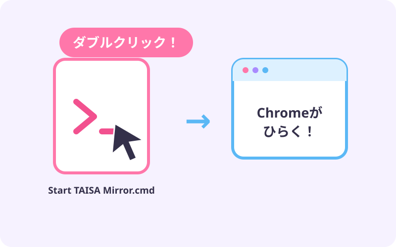
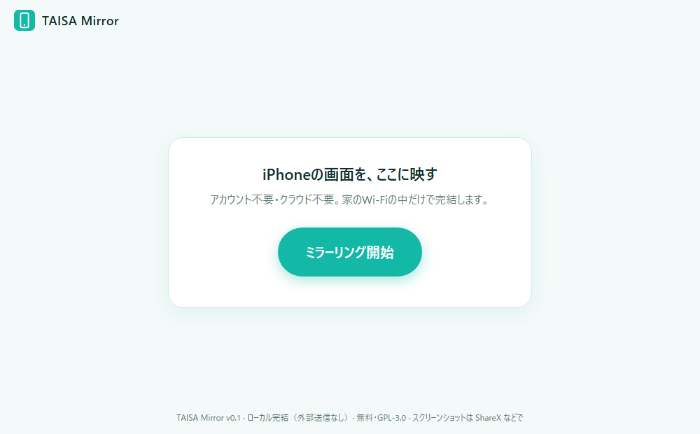
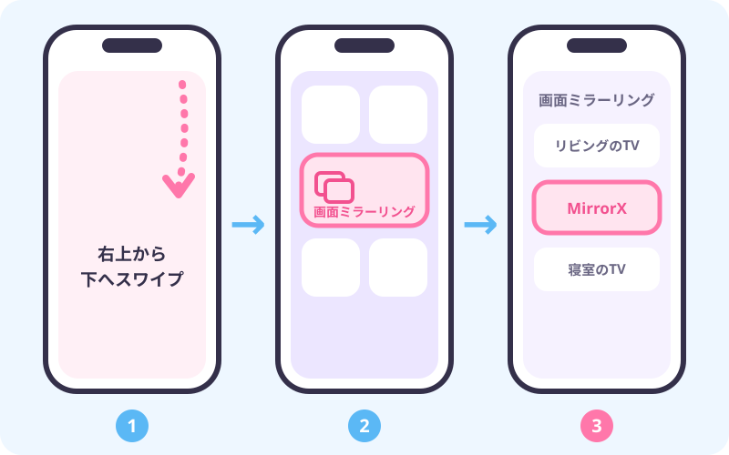

1ZIPを右クリック
ダウンロードしたZIPを、右クリック。
2「すべて展開」
メニューから「すべて展開」を選んで、そのまま「展開」。

超初心者向け・Windows 11
起動して、iPhoneで選ぶ。
それだけ。

こんなふうに、映ります。
（Google Chrome・パソコンの画面）
STEP 0
ボタンを押して、ZIPファイルを受け取ろう。
🪟 Windowsをお使いの方
まずはこれ！
⬇️ Windows版をダウンロード押すと、ZIPファイルのダウンロードが始まります。
🌐 GitHubでソースコードを見るファイル名：mirrorx-v0.2.0-win-x64.zip
SHA256：a53154154a0aa5f379abfd12030139a5a2c792b10db1a6ec660831ef4b639ac4
くわしい確認の手順は こちら。
STEP 1
ZIPは「ぎゅっと詰めた箱」。まず、ひらきます。
ダウンロードしたZIPを、右クリック。
メニューから「すべて展開」を選んで、そのまま「展開」。

できたフォルダの中に、Start MirrorX.cmd があればOK。

ZIPの中から直接起動しないでね。
かならず「すべて展開」してから！
STEP 2
Start MirrorX.cmd をダブルクリック。

起動すると、Chromeが自動で開きます。
STEP 3
大きなボタンを、ポチッ。

「接続待機中…」と出れば、準備OK。
STEP 4
パソコンとiPhoneは、同じWi-Fiにつないでおいてね。

STEP 5
映った！
これで、iPhoneの画面がWindowsに映ります。
🔒 画面は、クラウドへ送信されません。
次からは
もう、ダウンロードも展開もいりません。
↓
映る。
ZIPをそのPCにもコピーして、展開するだけ。
MirrorXをそのPCに入れておけば、
そのパソコンでもブラウザでミラーできる！
それぞれのPCで、ちゃんと使えます。
Chromeのアドレスに出る localhost は、「そのPC自身」という意味です。
メインPCの localhost と、サブPCの localhost は、別ものです。
だから、それぞれのPCで起動すれば大丈夫。
安心して使えるように、つくってあります。
たいてい、これで直ります。